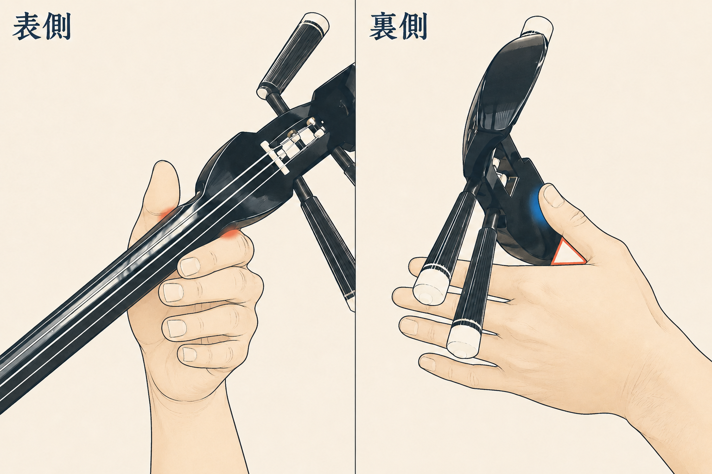
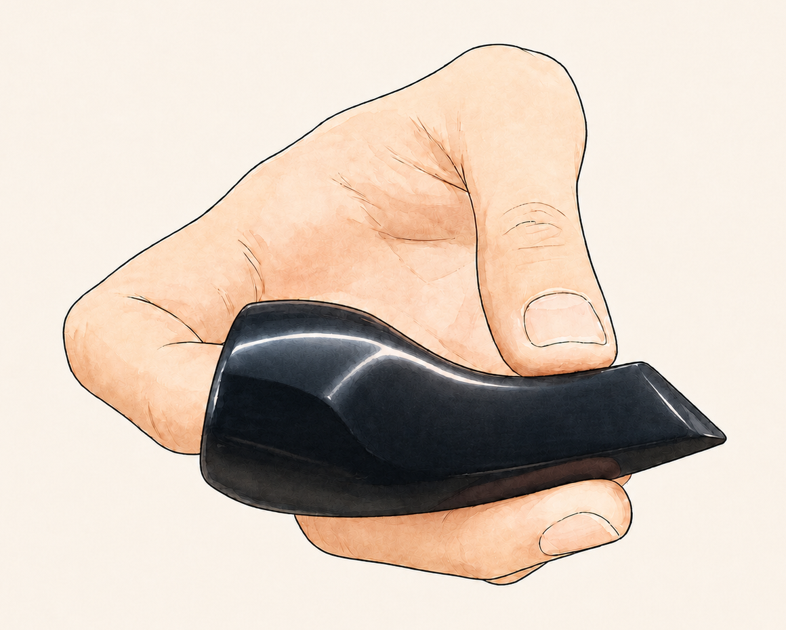
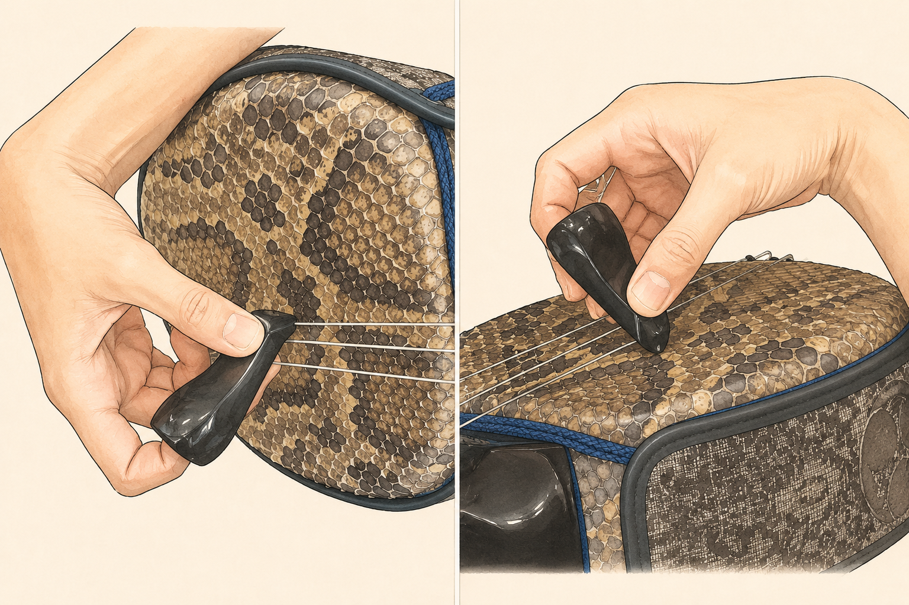
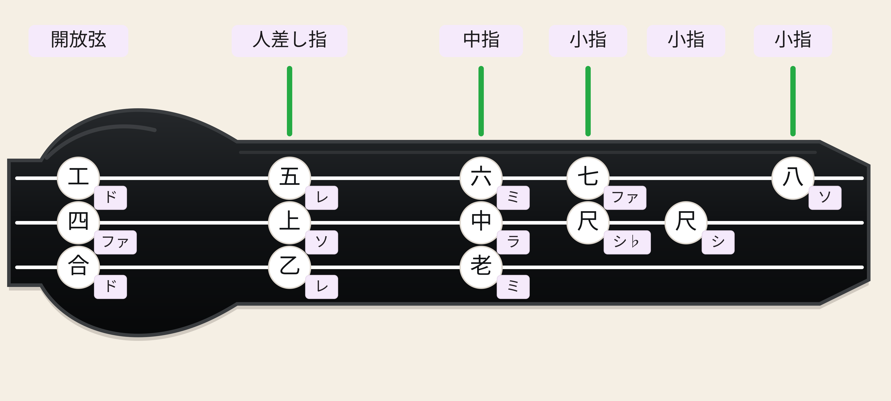

構え方・指使い・基本の弾き方を、練習前に確認できます。
1｜三線を構える
- 椅子に浅めに座り、背筋は伸ばします。ただし肩には力を入れません。
- 胴を右の太ももに置き、棹を左上へ向けます。
- 天（棹の先）は、左肩と同じくらいの高さが目安です。
- 胴を身体へ押しつけず、こぶし一つほど空けます。
- 左手を離しても三線が落ちないよう、右腕と太ももで安定させます。
2｜右手の使い方
- 爪（バチ）を右手の人差し指にはめます。
- 爪先を糸に対して、ほぼ直角に当てます。
- 腕全体を大きく振らず、手首を使って下へ弾きます。
- 強く叩くのではなく、小さな動きで澄んだ音を出します。
- 最初は速さより、三本の音量を揃えることを優先します。
3｜左手の棹の支え方

左：表側 右：裏側- 赤い部分：人差し指の付け根に乳袋のくびれを乗せます。
- 青い部分：親指を棹の裏側へ軽く添えます。
- 赤い三角：手のひらと棹の間に空間を残します。
- 残りの指：握り込まず、自然に曲げておきます。
左手は棹を固定するのではなく、軽く支えるだけです。
4｜基本的なバチの持ち方

人差し指を指穴へ軽く入れ、親指と中指で撥先の少し後ろを挟みます。- 軽くでよいので、指穴に人差し指を差し込みます。
- 親指と中指を撥先の少し後ろに挟み込みます。
5｜基本的な弾き方

左：正面から見た図 右：自分の目線から見た図- 弾く面に対して、撥を約45度に傾けるように持ちます。
- 指先の力を軽く抜き、撥先で絃を上から下へ押すように弾きます。
- 下の弦に乗せる感覚です。
6｜勘所と使う指

- 親指は乳袋の裏に軽く添えます。
- 工・四・合は開放弦です。指で押さえずに弦を弾きます。
- 乙・上・五は人差し指を使います。
- 老・中・六は中指を使います。
- 低い尺・七は、慣れるまでは小指が届きにくい勘所です。
- 高い尺・八は小指が届きにくいため、手全体をスライドします。